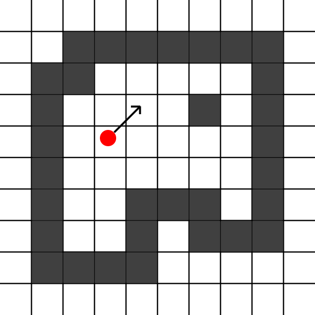
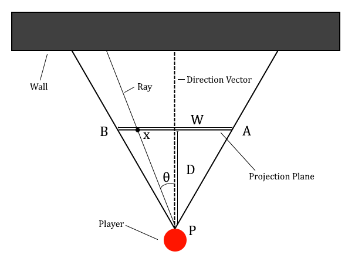
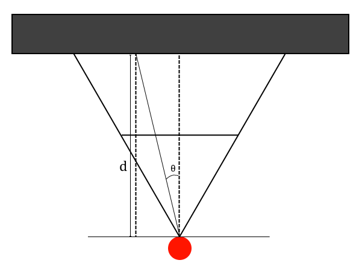
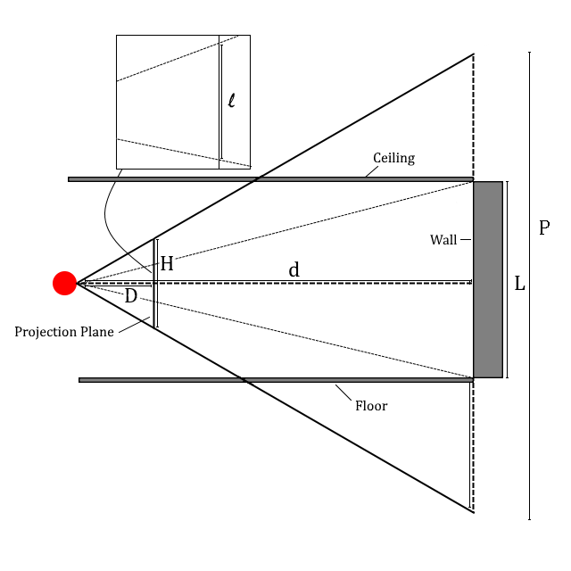

The goal of this article is to explain how raycasting works as well as give pseudocode examples of raycasting in practice. There is a seeming lack of good resources on this topic; oftentimes being too context-specific or too language-specific. Furthermore the mathematics are hastily or poorly explained.
Do note that graphical-routines will not be explained; it is assumed that the read will be familiar with whichever graphical and/or rendering library they are using.
Some care has been taken to be consistent with the use of notation. Fixed variables (ha ha) are given in uppercase while variable variables are given in lower case.
The goal of raycasting is to turn a 2D level consisting of floors and walls into a 3D representation of it by calculating z-information based on distance. To keep things simple we shall use a boolean array to represent the level. Thus the expression level[x][y] will evaluate to true if there is a wall at (x,y) and false otherwise.
In addition to the level there is also a player. The player has a position which is a floating-point vector and so we will have to do some rounding later on when indexing the level array. The player also has a direction vector which points in the direction the player is facing.
 FIG1
A very basic overview of the raycasting algorithm is given below. Do not worry if some terms are unfamiliar to you, these will be explained in detail in the section they are relevant in.
The projection plane is an imaginary plane sitting perpendicular to the player's direction vector at some distance from the player. How wide things appear are determined by two things: the distance from the player to the projection plane D and the width of the projection plane W. Both D and W are constants fixed at the start of the program. Together they determine the so-called horizontal FOV (field of view). The horizontal FOV is the angle BPA in the diagram below. Because D and W are fixed one may easily convert back and forth between horizontal FOV and D and W.
 FIG2
The reason for preferring to deal in terms of the width (and later height) of the projection plane will become apparent as we go along.
For each frame we must sweep the ray in front on the player to draw the level. The naive approach would simply be to start the ray as PB in Fig. 2 and increment the angle of the ray by a fixed amount until the ray is equal to PA. This method results in a distorted view since the projection plane is orthogonally projected onto the screen and so fixed-angle increments sweep out a circular section. The effect is that the world will look as if the projection plane was curved and our "camera" was using a curved or circular lens. This is often-times referred to as the "fish-eye effect".
Instead, we must calculate the angle based on how far along the projection plane we are drawing. Consider again Fig 2. We have set our zero to be the position straight ahead of the player. We get \theta = atan(x/D) and as we expect \theta will then range from -pi/2 to pi/2. Of course we rarely actually want a horizontal FOV of 180^deg so by varying the distance to the projection plane D we can get any horizontal FOV we want. As an example, with a width of W = 480 and a distance D = 240 the angle \theta will go from -45 deg to 45 deg; a horizontal FOV of 90 degrees.
The actual angle the ray is cast at is then atan(x/D) plus whatever the angle of the player's direction vector is. The pseudocode looks like this:
BEGIN
FOR x=-W/2 TO W/2
angle = atan(x/D) + player_direction_vector_angle
d = CAST RAY AT angle
...
ENDFOR
END
where d is the distance to the wall and "..." stands for calculating the projected height, drawing to the screen, etc. In the following sections we will expand this "..." and eventually end up with a full pseudocode for raycasting. The very first step is to delve into the "CAST RAY AT" method which will return the distance to the closest wall when given an angle.
There are a multitude of algorithms for determining whether a casted ray will collide with a wall, and if so, what the distance between the origin of the ray and the collision point is. The one explained in this article is the most simple of these. We begin at the player position (x0, y0) and then increment by (dx, dy) in a loop until we collide with a wall. Let us fix some small size to increment the ray by, say h. Basic trigonometry then tells us
dx = h * cos(theta),
dy = h * sin(theta),
where theta is the angle determined from the previous section. To check for collisions we simply refer to the 2D array of booleans which tells us where the walls of the level are. One benefit of this method is that we get the length of the ray for free. We simply calculate the Euclidean distance between the points (x0, y0) and (x,y) where (x,y) is the point we collided with the wall at. The pseudocode looks like this:
FUNCTION CAST_RAY(angle)
x = x0
y = y0
LOOP
x += h * cos(angle)
y += h * sin(angle)
IF walls[ROUND(x)][ROUND(y)] THEN
RETURN cos(angle) * sqrt((x-x0)^2 + (y-y0)^2)
ENDFUNCTION
The loop gets broken by the return call ensuring we don't get stuck iterating forever. The multiplication of the length of the ray by cos(theta) begs an explanation. Because the projection plane is orthogonally projected onto the screen, the distance from the screen to the wall is not the length of the ray, but rather that of the component of the ray perpendicular to the projection plane. As seen in the diagram below, we need to multiply the length of the ray by cos(theta) to get the length of the perpendicular component.
 FIG3
From now on when speaking of the distance d to the wall we shall always mean the perpendiuclar distance and distinguish it from the Euclidean distance by instead referring to that as the length of the ray.
To calculate the apparent or projected height of the wall we must decide on how tall our projection plane is, which we denote by H. Just as in the case with the horizontal FOV, the distance to and height of the projection plane determines our vertical FOV.
 FIG4
The figure shows three triangles lying on their sides from top to bottom, corresponding to the projections of the ceiling, wall, and floor, respectively. The wall will have an apparent height of l as the entire view of height P gets shrunk to fit in the projection plane of height H. We also see that the the rest of the projection plane's height are taken up by the ceiling and floor in equal proportions.
One issue which has not been a problem until now is what happens if the wall is closer to the player than the projection plane is. Our calculations up til now didn't need to account for this since the angle of the ray does not depend on where the wall is, and while the distance to the wall of course depends on where the wall is, it does not depend on how far away the projection plane is. The apparent height of the wall does however depend on both the distance to the projection plane as well as the distance to the wall.
For now assume the wall is at least as far away from the player as the projection plane is. Using Fig 4. we see that by similar triangles
H/D = P/d
L/P = l/H
which yields
l = LD/d
It might surprise you that the height of the projection plane has no impact on the apparent height of the wall. Instead, a larger projection plane height and thus vertical FOV results in the apparent height of the wall being a smaller percentage of the entire screen, as that is given by l/H. Importantly, assuming our player has his eyes in the middle of the room, i.e. the ray originates at a height of L/2, we find that the top (H - l)/2 of the screen should be drawn as ceiling, and the bottom (H - l)/2 as floor, with the middle l as wall.
What happens then if the wall is closer to us than the projection plane is? Clearly it must fill up the entire projection plane, and as a result the entire screen once the plane is projected onto the screen. Thus, we may simply report an apparent height of H whenever the distance to the wall is smaller than that of the distance to the projection plane. Things become slightly more complicated when textures are considered, but that will be covered in a later section.
The pseudocode of this section is very simple:
IF d > D THEN
l = LD/d
ELSE
l = H
ENDIF
The screen (more properly: main window) may very well be running in a different resolution as to that of the projection plane. Thus, unless the width and height of the projection plane exactly match the resolution of the main window we must perform some scaling before orthogonally projecting the result.
The scaling factor vertically is SCRHEIGHT / H and the scaling factor horizontally is SCRWIDTH / W. We start at the top of the screen and draw ceiling for (H - l)/2 * (SCRHEIGHT / H), then wall for l * (SCRHEIGHT / H) and finally floor for (H - l)/2 * (SCRHEIGHT / H). To stretch horizontally we simply make sure each vertical strip we draw has width SCRWIDTH / W.
Our drawing function looks like:
FUNCTION DRAW_STRIP(l, x)
FOR y=0 to y=(H-l)/2
FOR w=x TO w=x+SCRWIDTH / W
DRAW PIXEL at (x,y)
ENDFOR
ENDFOR
FOR y=(H-l)/2 to y=(H-l)/2 + l
FOR w=x TO w=x+SCRWIDTH / W
DRAW PIXEL at (x,y)
ENDFOR
ENDFOR
FOR y=(H-l)/2 + l to y=SCRHEIGHT
FOR w=x TO w=x+SCRWIDTH / W
DRAW PIXEL at (x,y)
ENDFOR
ENDFOR
ENDFUNC
We can now put all the parts together. We have the main loop that goes through the width of the projection plane, calculates the angle, casts a ray at that angle to get the distance to the closest wall, calculates the projected height of the wall, and finally projects it to the screen and draws it. This matches exactly the steps described at the very start of the article.
BEGIN
FOR x=-W/2 TO W/2
angle = atan(x/D)
distance = CAST_RAY(angle)
IF distance > D THEN
l = LD/d
ELSE
l = H
ENDIF
DRAW_STRIP(l, x)
ENDFOR
END
FUNCTION CAST_RAY(angle)
x = x0
y = y0
LOOP
x += h * cos(theta)
y += h * sin(theta)
IF walls[ROUND(x)][ROUND(y)] THEN
RETURN cos(theta) * sqrt((x-x0)^2 + (y-y0)^2)
ENDFUNCTION
FUNCTION DRAW_STRIP(l, x)
FOR y=0 to y=(H-l)/2
FOR w=x TO w=x+SCRWIDTH / W
DRAW PIXEL at (x,y)
ENDFOR
ENDFOR
FOR y=(H-l)/2 to y=(H-l)/2 + l
FOR w=x TO w=x+SCRWIDTH / W
DRAW PIXEL at (x,y)
ENDFOR
ENDFOR
FOR y=(H-l)/2 + l to y=SCRHEIGHT
FOR w=x TO w=x+SCRWIDTH / W
DRAW PIXEL at (x,y)
ENDFOR
ENDFOR
ENDFUNC
TBA